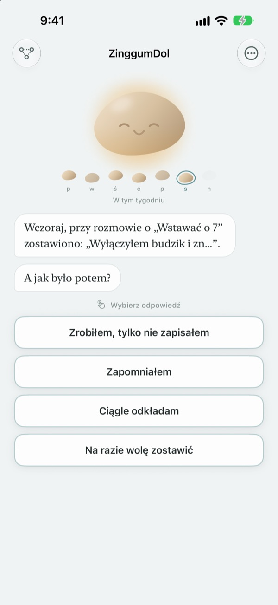
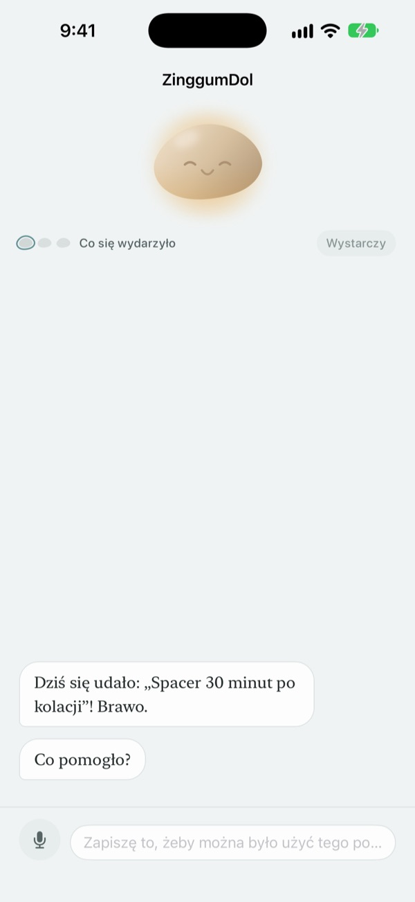
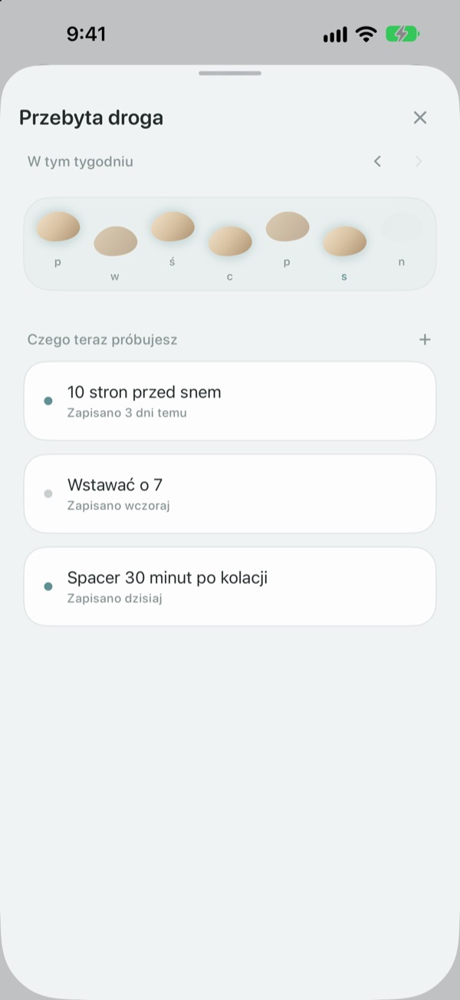
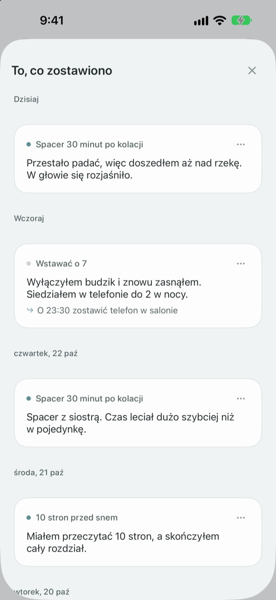

Potknięcie to jeszcze nie
wpadnięcie do strumienia
W dniu, gdy nie zrealizujesz celu, kamyk odzywa się pierwszy. Pyta, co się stało, a nie co zrobiłeś źle, i oddaje ci fakty oraz uczucia osobno.
Rozmowy, wpisy i przebyta droga są za darmo. Bez konta i bez reklam.

Porozmawiaj z kamykiem
Miałeś dziś wieczorem iść na spacer i nie wyszło. Stuknij odpowiedź albo napisz własną, a kamyk odpowie tak samo jak w aplikacji.
Gdy dzień nie idzie zgodnie z planem, obwiniasz siebie?
Wieczorem po opuszczonym treningu pierwsza myśl to często „co jest ze mną nie tak?”. Gdy przyjrzysz się bliżej, były nadgodziny, padało, byłeś wykończony. ZinggumDol osobno pyta, co się stało i jak się czujesz, i kładzie jedno obok drugiego. Kiedy widzisz, że to były okoliczności, a nie brak silnej woli, łatwiej znaleźć następny mały krok.
Kamyk odzywa się pierwszy
Ustaw cel, a kamyk będzie śledził dni, kiedy się udało, i dni, kiedy utknąłeś. Gdy dzień się wymknie, zapyta „co się stało?” zamiast „dlaczego nie?”, i pamięta, co mu ostatnio opowiedziałeś.
Gdy pisanie to za dużo, po prostu powiedz to na głos. Mowa jest rozpoznawana na urządzeniu, a nagrania nigdy nie są zapisywane.

Twoje dni jak kamienie w strumieniu
Każdy tydzień układa się w rząd kamieni. Dni, na które nie stanąłeś, też zostają; nic nie jest kasowane.
Nawet z jedną czy dwiema lukami widzisz, że droga biegnie dalej.

Przeczytaj, co napisałeś
Co się stało, jak się czułeś i co spróbujesz następnym razem, zbiera się według dat. Przeczytaj dzień, w którym utknąłeś podobnie, a zobaczysz, co pomogło.
Widżet pokazuje słowo od kamyka na ekranie początkowym, a przypomnienie o wybranej godzinie zaprasza, by spojrzeć wstecz na dzień.

Na start wystarczą trzy kroki
- 1
Zapisz jeden cel
Na przykład „Spacer 30 minut po kolacji”.
- 2
Otwórz aplikację wieczorem
Kamyk zapyta, jak minął dzień. Z przypomnieniem nie zapomnisz.
- 3
Stuknij albo napisz odpowiedź
W każdej chwili możesz przerwać przyciskiem
Na razie wolę zostawić.
Jak przebiega rozmowa
- Co się wydarzyło
- Tylko fakty: co stanęło na przeszkodzie
- Uczucia
- Jak się teraz czujesz, w skali pięciu stopni
- Spojrzenie wstecz
- Kamyk oddaje ci to, co się stało, i twoje uczucia osobno
- Następny krok
- Sam wybierasz coś małego, wystarczy pięć minut
- Podsumowanie
- W naprawdę ciężki dzień o nic już nie pyta i proponuje odpoczynek
Możesz przerwać w dowolnym momencie, a to, co powiedziałeś do tej pory, zostaje zapisane.
Rozmowy i wpisy są za darmo. Pro, jeśli chcesz więcej.
Za darmo
- Wszystkie rozmowy z kamykiem
- Do trzech celów
- Mówienie zamiast pisania
- Przebyta droga i wszystko, co napisałeś
- Widżet i codzienne przypomnienie
- Blokada kodem
ZinggumDol Pro
- Tyle celów, ile chcesz
- Sześć wykończeń kamyka do wyboru
- Eksport wpisów do pliku tekstowego
Kupujesz raz i masz na zawsze. To nie subskrypcja.
W środku rozmowy nigdy nie pojawia się ekran płatności. Na nowym urządzeniu lub po ponownej instalacji stuknij Przywróć zakupy w Ustawieniach.
Częste pytania
Czy muszę tłumaczyć każdy opuszczony dzień?
Nie. W każdej chwili stuknij Na razie wolę zostawić, a rozmowa od razu się kończy. To, co powiedziałeś, zostaje zapisane, więc możesz wrócić później.
Zrobiłem to, ale aplikacja twierdzi, że nie.
Stuknij Zrobione, tylko niezapisane. Kamyk przyjmie poprawkę i zapyta, co pomogło. To, co zadziałało, zostaje zapisane i wróci, gdy następnym razem utkniesz.
Dokąd trafia to, co mówię na głos?
Twoja mowa zamienia się w tekst na urządzeniu, a nagranie nigdy nie jest zapisywane. Na obsługiwanych urządzeniach zdania są też wygładzane, by lepiej się czytały, również na urządzeniu.
Ile celów mogę mieć?
Trzy za darmo. Gdy skończysz z którymś, użyj Odpuść w Przebytej drodze, by zwolnić miejsce. Na więcej niż trzy potrzebujesz ZinggumDol Pro.
Czy ZinggumDol Pro to subskrypcja?
Nie. Płacisz raz i jest twoje. Na nowym urządzeniu lub po ponownej instalacji stuknij Przywróć zakupy w Ustawieniach.
Czy ktoś inny może czytać mój dziennik?
Nie ma konta. Wpisy są tylko na twoim urządzeniu i w twoim własnym iCloud, a w Ustawieniach możesz zablokować aplikację kodem. To, co piszesz, nigdy nie trafia do twórcy. Anonimowe statystyki użycia możesz wyłączyć w Ustawieniach.
Jak zmienić godzinę przypomnienia?
W Codzienne przypomnienie w Ustawieniach włączysz je, wyłączysz i wybierzesz godzinę.
Czy kamyk przypomina mi też o sukcesach?
Tak. Pamięta, co ci pomogło, a w trudny dzień przypomina o czymś, co niedawno ci się udało.
Jak wszystko usunąć?
Stuknij Usuń wszystkie wpisy w Ustawieniach. Cele i wpisy znikną na zawsze, także na innych urządzeniach połączonych przez iCloud. Ustawienia i zakupy zostają. Z Pro możesz najpierw zachować kopię przez Eksportuj wpisy.
Jak się z wami skontaktować?
Przez „Wyślij opinię” w Ustawieniach aplikacji albo mailowo na adres poniżej.
Pytania lub uwagi? Napisz na leeo@kakao.com.